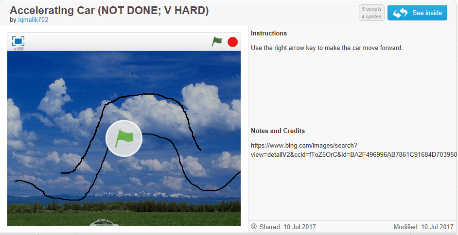
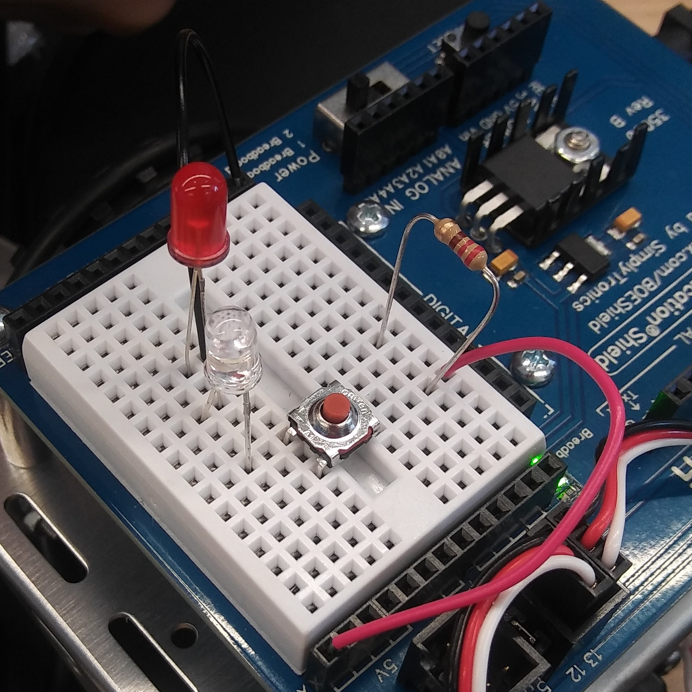

About Me
About Me
Biography
Hi there, my name is Ana! I'm 16 years old. I was born in Tbilisi, Georgia.
I moved to America when I was 7 years old.
Likes
- Listening to music
- Sweets
- Coding
- Reading
- Math
- Clothes
- Learning
- Dancing
Dislikes
- Writing about things that doesn't inspire me
- Environmental Science
Fun Facts
- I used to take Georgian dancing
- I used to play the piano
- I don't know how to cook
- I used to take singing classes
- I love looking at art and trying to figure out the meaning behind some pieces, but I"m not the best at drawing.
Links to My Favorit Websites
Side Scroller: A Game Made By Me

The player contols a car. The car has to overcome a bunch of obstacles, like jumping over a void. Whoever gets to the rainbow finish line, wins the game!
Here Is The Link To My Scratch Project
Side Scroller
Robotics: Circuits

Today we learned how to make an LED light bulb light up. When we were done with this, we could try to make the circuit more complex. So my group used a button and two LED lights! So when you pressed the button, both of the LEDs would light up.